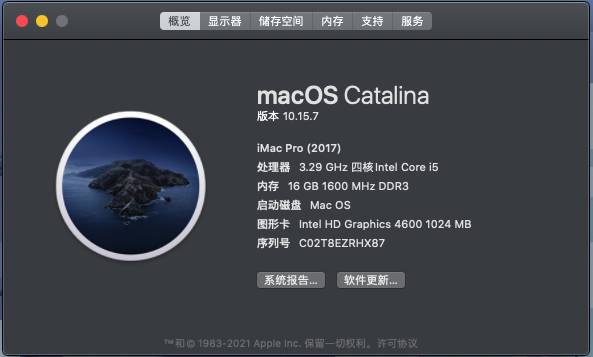
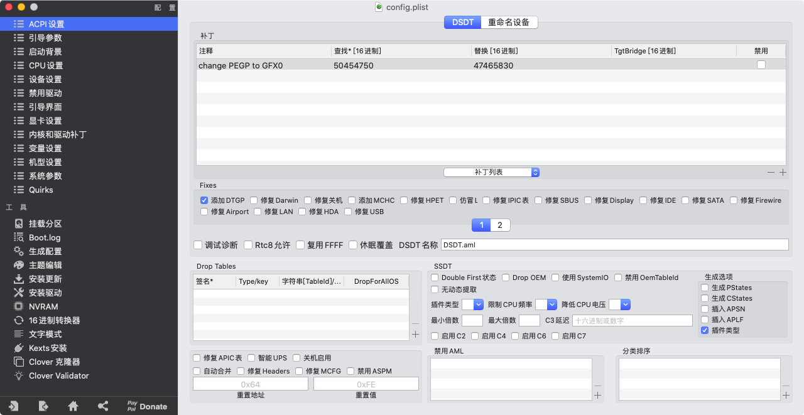
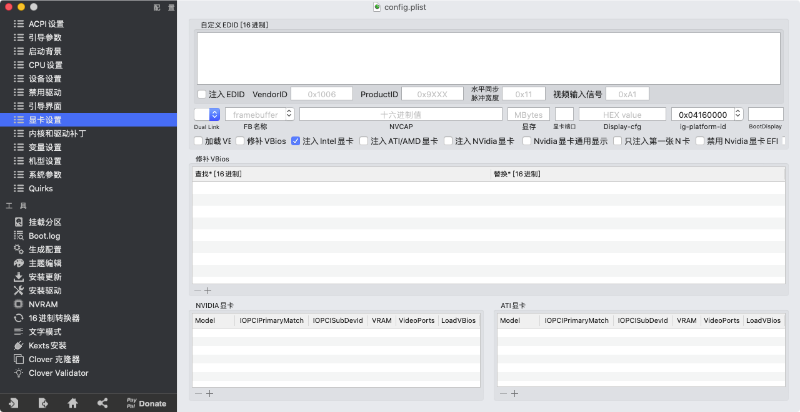
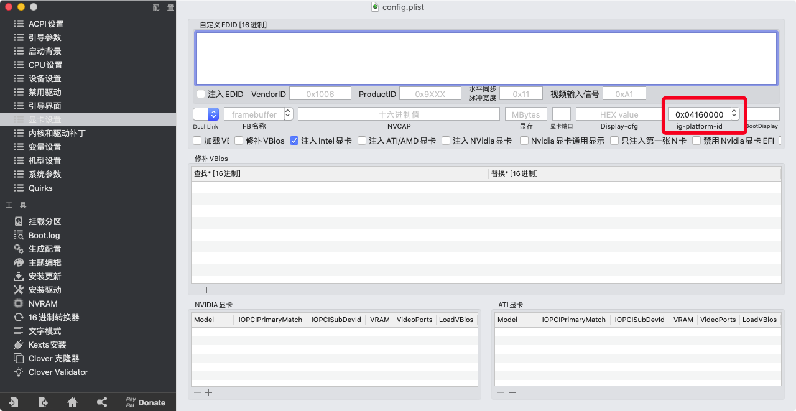
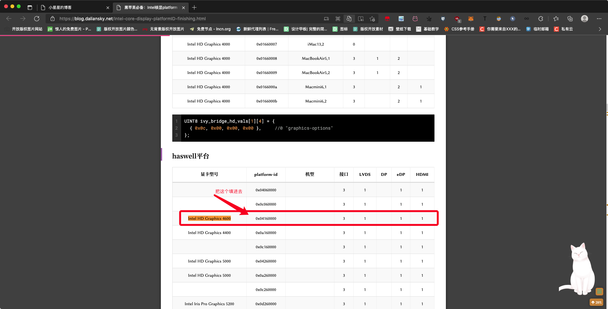
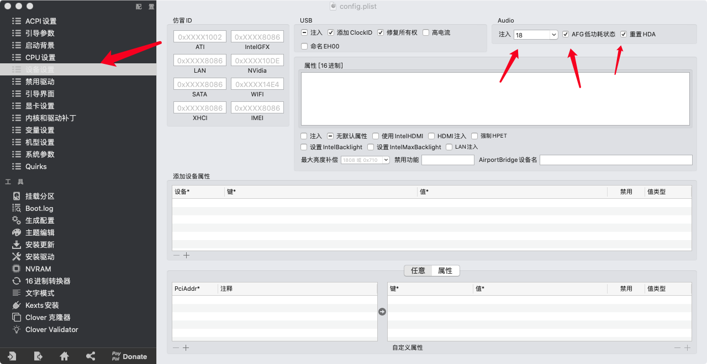
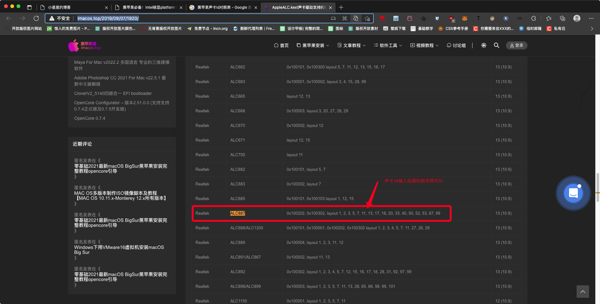

黑苹果Clover注入声卡、核显ID
前言
前几天电脑显卡没了，只能用核显了，这让我这台接近十年的老电脑运行windows的时候有些吃力，经过一番的思考，我装上了黑苹果，因为之前这台电脑就装过黑苹果，所以我知道硬件方面是没问题的，这次能不能再次装上就看我的技术问题了，于是经过两天的努力，我这台电脑顺利装上了黑苹果。
安装的过程还是有点艰辛的，毕竟上次我用黑苹果是在一年多以前了，那时候mac os的最高版是10.15.4，现在都出到了12了，引导也更新了很多个版本了。那时候主流的引导程序还是Clover,现在很多都是OC了。
经过了九牛二虎之力，终于成功装上了，安装的详细过程就不说了，但是只要引导（EFI）找对了，那安装起来就简单了，就和windows安装方法差不多了，都是插上U盘，然后启动安装程序，开始安装。
这个是原版安装，还有一种是恢复方式对安装，不用U盘，有专门的工具，直接把别人安装好的系统恢复到你电脑上，现在据说原版安装也可以用工具直接在windows下安装了，但是我没试过，不知道怎么操作，也不知道是不是真的原版安装。
安装的过程就不多说了，感兴趣的小伙伴可以在B站或者是个大视频网站上直接搜索黑苹果安装就可以找到相关的视频教程了，这里就记录一下我注入驱动的方法吧，毕竟我的记性不是很好，和大家分享的同时也是自己做个记录吧。

开始
注入显卡ID
首先用Clover编辑器打开引导的配置文件

然后点击【显卡设置】

在【显卡设置】里面可以看到有个选项是【ig-platform-id】，就是在这个选项上填写ID注入

这个显卡id是根据自己的显卡型号来填写的，如果不知道自己的显卡id的话可以打开[这个](黑苹果必备：Intel核显platform ID整理及smbios速查表 | 黑果小兵的部落阁 (daliansky.net))网站查找，根据自己的核显型号来查找，例如我的是核显型号是Intel HD Graphics 4600那么我直接使用快捷键ctrl+f搜索我的核显型号，然后就可以找到相应的id了，如果搜索自己的型号有多个id的话就需要一个一个测试了。

注入声卡ID
注入声卡id和显卡id都是一样的方法，只是注入的位置不同，注入声卡id的位置是【设备设置】里面，在【设备设置】里面有一个【Audio】选项，声卡id就是在这个里面注入，注入声卡id的同时勾选上后面的两个选项。

同样的，声卡id也是更具自己的声卡型号来查的，打开[这个](AppleALC.kext声卡驱动支持的硬件型号与ID速查表 - 黑苹果屋 (imacos.top))网站，然后按照搜索显卡id的方法进行搜索，同一个型号的声卡id是比较多的，只能一个个试。

如果在我给的那两个网站上找不到自己的声卡或者是显卡id就自己百度【声卡id对照表/显卡id对照表】，提供这个对照表的网站还是有很多的。
如果不知道自己的核显型号和声卡型号的话自己百度自己的处理器就可以看到处理器参数了，同理，不知道自己的声卡id就直接百度主板型号查看参数。
结尾彩蛋

本博客所有文章除特别声明外，均采用 CC BY-SA 4.0 协议 ，转载请注明出处！